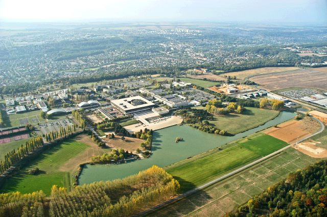

<HTML>
<HEAD>
<TITLE>
Programme of ETVC'08: Emerging Trends in Visual Computing (LIX Fall Colloquium 2008) | Frank NIELSEN |ETVC08
</TITLE>

<link rel="icon" href="http://www.lix.polytechnique.fr/Labo/Frank.Nielsen/ETVC08/favicon.ico" type="image/x-icon"> 
<link rel="shortcut icon" href="http://www.lix.polytechnique.fr/Labo/Frank.Nielsen/ETVC08/favicon.ico" type="image/x-icon"> 


</HEAD>
<BODY>
<!-- Frank NIELSEN -->

<script type="text/javascript">
function toggleMe(a){
  var e=document.getElementById(a);
  if(!e)return true;
  if(e.style.display=="none"){
    e.style.display="block"
  } else {
    e.style.display="none"
  }
  return true;
}

function toggleAll()
{
toggleMe('aGuibas');
toggleMe('aGu');
toggleMe('aBoissonnat');

toggleMe('aVemuri');
toggleMe('aPennec');


toggleMe('aRaskar');
toggleMe('aFua');

toggleMe('aGross');
toggleMe('aParagios');
toggleMe('aTaubin');

toggleMe('aAmari');
toggleMe('aZhang');
toggleMe('aMatsuzoe');

toggleMe('aNock');
toggleMe('aBarbaresco');
toggleMe('aNielsen');

toggleMe('aAsano');
toggleMe('aVetterli');
toggleMe('aMallat');
toggleMe('aBarlaud');

toggleMe('aSchmid');
toggleMe('aLazard');
toggleMe('aMetaxas');
toggleMe('aSuresh');

toggleMe('aBach');

return true;
}
</script>

<h1><A HREF="#programme">Programme</A>:</h1>

The bus will depart at <font color="FF0000">Noon 30 (12h30) </font in front of 
<font color="FF0000">Hotel Montparnasse Alesia</font> (147 ter rue d'Alesia, 75014 Paris)<BR>
Please have lunch before. Thank you.


<h2>Emerging Trends in Visual Computing (LIX Colloquium 2008, ETVC'08)</h2>


Buses from/to <A HREF="http://en.wikipedia.org/wiki/%C3%89cole_polytechnique">Ecole Polytechnique</A><-><A HREF="http://en.wikipedia.org/wiki/Denfert-Rochereau_(Paris_M%C3%A9tro_and_RER)">Denfert-Rochereau</A>
 will be available to participants (require prior <A HREF="registration.html">free registration</A>) as follows:

<UL>
<LI> Tuesday 18th Nov.: Noon 30min Paris (<A HREF="#meeting">meeting place</A>)  -> Ecole Polytechnique 
</LI>

<LI> Tuesday 18th Nov.: 19:00pm Ecole Polytechnique -> Paris (meeting place)
</LI>
&nbsp;<BR>

<LI> Wednesday 19th Nov.: 8:00am Paris (meeting place) -> Ecole Polytechnique
</LI>
<LI> Wednesday 19th Nov.: 6:30pm Ecole Polytechnique ->Paris (meeting place)
</LI>

&nbsp;<BR>

<LI> Thursday 20th Nov.: 8:00am Paris (meeting place) -> Ecole Polytechnique
</LI>

<LI> Thursday 20th Nov.: 4:00pm Ecole Polytechnique -> Massy Palaiseau (shuttle bus with X-Forum). From there, you get direct access to RER B to Denfert-Rochereau (Paris)
</LI>
</UL>
There are two buses. We ask participants to gather on the pavement in front of the <A HREF="#meeting">Hotel Alesia Montparnasse</A> 
(because buses cannot park in Paris nearby that place. So we will have to ride on-the fly -:) )

Departure/arrival to Ecole Polytechnique at Ferrier place
 (cours Ferrie, <A HREF="">picture here</A>). 
Departure/arrival to Denfert-Rochereau: <A HREF="">picture here</A><BR>


<HR>
Besides the dedicated shuttle, you can come your own way to Ecole Polytechnique as follows:
<UL>
<LI>RER B from Denfert-Rochereau to Massy Palaiseau + Bus 91.01: 
See <A HREF="directions.html">itinary with pictures</A>.
<LI>RER B from Denfert-Rochereau to Lozere + hill climbing (ascent method, recommended without lugagges): 
See <A HREF="PhotosLozere/directions2.html">itinary with pictures</A>.
</UL>
<HR>


<HR>
<center>

</center>
<HR>


<center>
The colloquium is sponsored by <A HREF="http://www.digiteo.fr">DIGITEO</A>, <A HREF="http://www.cnrs.fr">CNRS</A> and the 
French working group on CS & Math. (<A HREF="http://www.gdr-im.fr/">GDR Informatique Mathématique</A>).
</center>

<center>
<b>List of <A HREF="AbstractTalksETVC08.pdf">abstracts</A> in PDF format (12 pages)</b>
</center>


<A name="programme"></A>
<center>
Talks are <font size="+2" color=red>35 minutes</font> long followed by a <font size="+2" color=red>5-minute</font> question&answer session.<BR>
<BR>
(please allow JavaScripts for viewing abstracts)
<HR>
&nbsp;<BR>


<center>

<form>
<input type="button" class="button" onclick="return toggleAll()" style="font-size:150%" value="Toggle show all abstracts">

<input type="button" style="font-size:150%" value="Print the programme" onClick="window.print()">
</form>
</center>

<table width="700" >


<tr bgcolor="#DDFFDD" width="100%">
<td align="center">
<font size="+2"><b>Tuesday 18th November 2008 (Pierre Faurre auditorium)</b>
</font>
</td>
</tr>


<tr bgcolor="#FF24D&">
<td>
1:30pm-1:50pm: <b>Registration</b> 
</td>
</tr>


<tr bgcolor="#FFAAAA">
<td>
1:50pm-2:00pm: <b>Opening</b>  <A HREF="http://www.lix.polytechnique.fr/~steyaert/">Jean-Marc Steyaert 
(CS Dept. Chairman)</A> and <A HREF="http://www.lix.polytechnique.fr/Labo/Frank.Nielsen/">Frank Nielsen</A> (Professor)
</td>
</tr>

<!-- SESSION I -->

<tr>
<td>
<font size="+1">SESSION I, Chair: <A HREF="http://www.bacs.ethz.ch/consortium/people/marc">Raphael MARC</A>, EDF R&D, France</font>
</td>
</tr>


<tr bgcolor="#EEEEEE">
<td>
2:00pm-2:35pm:<BR>
<A HREF="http://geometry.stanford.edu/member/guibas/">Leonidas GUIBAS</A> (Computer Science Department, Stanford University, USA)<BR>
<em>Detection of Symmetries and Repeated Patterns in 3D Point Cloud Data</em><BR>
<input type="button" class="button" onclick="return toggleMe('aGuibas')" value="Abstract"><BR>
<div id="aGuibas" style="display:none">
<HR>
Digital models of physical shapes are becoming ubiquitous in our economy and life. 
Such models are sometimes designed ab initio using CAD tools, but more and more often they are based on existing real objects whose shape is acquired 
using various 3D scanning technologies. In most instances, the original scanner data is just a set, but a very large set,  
of points sampled from the surface of the object. We are interested in tools for understanding the local and global structure of 
such large-scale scanned geometry for a variety of tasks, including model completion, reverse engineering, shape comparison and retrieval, 
shape editing, inclusion in virtual worlds and simulations, etc. This talk will present a number of point-based techniques for discovering 
global structure in 3D data sets, including partial and approximate symmetries, shared parts, repeated patterns, etc. 
It is also of interest to perform such structure discovery across multiple data sets distributed in a network, 
without actually ever bring them all to the same host.
<HR>
</div>


&nbsp;<BR>

2:40pm-3:15pm:<BR>

<A HREF="http://www.cise.ufl.edu/~gu/">Xianfeng David GU</A> (State University of New York at Stony Brook, USA)<BR>
<em>Discrete Curvature Flow for Surfaces and 3-Manifolds</em><BR>
<input type="button" class="button" onclick="return toggleMe('aGu')" value="Abstract"><BR>
<div id="aGu" style="display:none">
<HR>
Talk given by the first author Xiaotian YIN<BR>

This talk introduce the concepts, theories and algorithms
for discrete curvature flows for surfaces with arbitrary topologies. Discrete
curvature flow for hyperbolic 3-manifolds with geodesic boundaries
are also explained. Curvature flow method can be used to design Riemannian
metrics by prescribed curvatures, and applied for parameterization
in graphics, shape registration and comparison in vision and brain mapping
in medical imaging, spline construction in computer aided geometric
design, and many other engineering fields.
<HR>
</div>

&nbsp;<BR>

3:20pm-3:55pm:<BR>
<A HREF="http://www-sop.inria.fr/geometrica/team/JeanDaniel.Boissonnat/">Jean-Daniel BOISSONNAT</A> (GEOMETRICA, INRIA Sophia-Antipolis, France)<BR>
<em>Certified Mesh Generation</em><BR>
<input type="button" class="button" onclick="return toggleMe('aBoissonnat')" value="Abstract"><BR>
<div id="aBoissonnat" style="display:none">
<HR>
Given a domain D, the problem of mesh generation is to construct a 
simplicial complex that approximates D in both a topological and a 
geometrical sense and whose elements satisfy various constraints such as 
size, aspect ratio or anisotropy. The talk will cover some recent 
results on triangulating surfaces and volumes by Delaunay refinement,  
anisotropic mesh generation and surface reconstruction. Applications in 
medical images, computer vision and geology will be discussed.
<HR>
</div>

</td>
</tr>


<tr bgcolor="#EEEEDD">
<td>
4:00pm-4:20pm: Coffee break 
</td>
</tr>


<tr>
<td>

<font size="+1">SESSION II,  Chair: <A HREF="http://www-dsv.cea.fr/instituts">Malgorzata TKATCHENKO</A>, CEA</font>
</td>
</tr>

<tr bgcolor="#EEEEEE">
<td>
4:20pm-4:55pm<BR>
<A HREF="http://www.cise.ufl.edu/~vemuri/">Baba VEMURI</A> (CISE Dept., University of Florida, USA)<BR>
<em>Information-Theoretic Algorithms for Diffusion Tensor Imaging</em><BR>
<input type="button" class="button" onclick="return toggleMe('aVemuri')" value="Abstract"><BR>
<div id="aVemuri" style="display:none">
<HR>
Concepts from Information Theory have been used quite widely in Image
Processing, Computer Vision and Medical Image Analysis for several decades
now. Most widely used concepts are that of KL-divergence, minimum description
length (MDL), etc. These concepts have been popularly employed for image
registration, segmentation, classification etc. In this chapter we review several
methods, mostly developed by our group at the Center for Vision, Graphics &
Medical Imaging in the University of Florida, that glean concepts from Information
Theory and apply them to achieve analysis of Diffusion-Weighted Magnetic
Resonance (DW-MRI) data.
This relatively new MRI modality allows one to non-invasively infer axonal
connectivity patterns in the central nervous system. The focus of this chapter is
to review automated image analysis techniques that allow us to automatically
segment the region of interest in the DWMRI image wherein one might want to
track the axonal pathways and also methods to reconstruct complex local tissue
geometries containing axonal fiber crossings. Implementation results illustrating
the algorithm application to real DW-MRI data sets are depicted to demonstrate
the effectiveness of the methods reviewed.
<HR>
</div>


&nbsp;<BR>

5:00pm-5:35pm<BR>
<A HREF="http://www-sop.inria.fr/members/Xavier.Pennec/">Xavier PENNEC</A>  (ASCLEPIOS, INRIA Sophia-Antipolis, France)<BR>
<em>Statistical Computing on Manifolds for Computational Anatomy</em><BR>
<input type="button" class="button" onclick="return toggleMe('aPennec')" value="Abstract"><BR>  
<div id="aPennec" style="display:none">
<HR>
Computational anatomy is an emerging discipline that aims
at analyzing and modeling the individual anatomy of organs and their biological
variability across a population. The goal is not only to model the
normal variations among a population, but also discover morphological
dierences between normal and pathological populations, and possibly
to detect, model and classify the pathologies from structural abnormalities.
Applications are very important both in neuroscience, to minimize
the inuence of the anatomical variability in functional group analysis,
and in medical imaging, to better drive the adaptation of generic models
of the anatomy (atlas) into patient-specic data.
However, understanding and modeling the shape of organs is made di-
cult by the absence of physical models for comparing dierent subjects,
the complexity of shapes, and the high number of degrees of freedom
implied. Moreover, the geometric nature of the anatomical features usually
extracted raises the need for statistics and computational methods
on objects like curves, surfaces and deformations that do not belong to
standard Euclidean spaces.
We investigate in this chapter the Riemannian metric as a basis for developing
generic algorithms to compute on manifolds. We show that few
computational tools derive this structure can be used in practice as the
basic atoms to build more complex generic algorithms such as mean computation,
Mahalanobis distance, interpolation, ltering and anisotropic
diusion on elds of geometric features. This computational framework
is illustrated with the analysis of the shape of the scoliotic spine and
the modeling of the brain variability from sulcal lines where the results
suggest new anatomical ndings.
<HR>
</div>


&nbsp;<BR>

5:40pm-6:15pm:<BR>
<A HREF="http://lear.inrialpes.fr/~schmid/">Cordelia SCHMID</A> (LEAR, INRIA Grenoble, France)<BR>
<em>Large-Scale Object Recognition Systems</em><BR>
<input type="button" class="button" onclick="return toggleMe('aSchmid')" value="Abstract"><BR>
<div id="aSchmid" style="display:none">
<HR>
This paper introduces recent methods for large scale image
search. State-of-the-art methods build on the bag-of-features image representation.
We first analyze bag-of-features in the framework of approximate
nearest neighbor search. This shows the sub-optimality of such a
representation for matching descriptors and leads us to derive a more
precise representation based on 1) Hamming embedding (HE) and 2)
weak geometric consistency constraints (WGC). HE provides binary signatures
that refine the matching based on visual words. WGC filters
matching descriptors that are not consistent in terms of angle and scale.
HE and WGC are integrated within the inverted file and are efficiently
exploited for all images, even in the case of very large datasets. Experiments
performed on a dataset of one million of images show a significant
improvement due to the binary signature and the weak geometric consistency
constraints, as well as their efficiency. Estimation of the full
geometric transformation, i.e., a re-ranking step on a short list of images,
is complementary to our weak geometric consistency constraints
and allows to further improve the accuracy.
<HR>
</div>
<!-- font size="+1" color="red"><em>Open session problems</em>: Bring yours!</font>  -->
</td>
</tr>


<tr>
<td>
&nbsp;
</td>
</tr>

<tr bgcolor="#DDFFDD" align="center">
<td align="center">
<b><font size="+2">Wednesday 19th November 2008</b>
</font>
</td>
</tr>

<tr>
<td>
<font size="+1">SESSION III</font>
</td>
</tr>

<tr bgcolor="#EEEEEE">
<td>
9:00-9:35:<BR>
<A HREF="http://cvlab.epfl.ch/~fua/">Pascal FUA</A> (EPFL, CVLAB, Swiss)<BR>
<em>Recovering Shape and Motion from Video Sequences</em><BR>
<input type="button" class="button" onclick="return toggleMe('aFua')" value="Abstract"><BR>
<div id="aFua" style="display:none">
<HR>
In recent years, because cameras have become inexpensive and ever more prevalent, there has been increasing interest in video-based modeling of shape and motion. This has many potential applications in areas such as electronic publishing, entertainment, sports medicine and athletic training. It, however, is an inherently difficult task because the image-data is often incomplete, noisy, and ambiguous. 

In our work, we focus on the recovery of deformable and articulated 3D motion from single video sequences. In this talk, I will present the models we have developed for this purpose and demonstrate the applicability of our technology for Augmented Reality and human body tracking purposes. Finally, I will present some open research issues and discuss our plans for future developments.
<HR>
</div>


 &nbsp;<BR>

9:40-10:15:<BR> 
<A HREF="http://venus.kyy.nitech.ac.jp/~matsuzoe/">Hiroshi MATSUZOE</A> (Department of Computer Science and Engineering Graduate School of Engineering, Nagoya Institute of Technology, NITECH, Japan)<BR>
<em>Computational Geometry from the Viewpoint of Affine Differential Geometry</em><BR>
<input type="button" class="button" onclick="return toggleMe('aMatsuzoe')" value="Abstract"><BR>
<div id="aMatsuzoe" style="display:none">
<HR>
Incidence relations (configurations of vertexes, edges, etc.)
are important in computational geometry. Incidence relations are invariant
under the group of affine transformations. On the other hand, affine
differential geometry is to study hypersurfaces in an affine space that are
invariant under the group of affine transformation. Therefore affine differential
geometry gives a new sight in computational geometry. From the
viewpoint of affine differential geometry, algorithms of geometric transformation
and dual transformation are discussed. The Euclidean distance
function is generalized by a divergence function in affine differential geometry.
A divergence function is an asymmetric distance-like function
on a manifold, and it is an important object in information geometry.
For divergence functions, the upper envelope type theorems on statistical
manifolds are given. Voronoi diagrams determined from divergence
functions are also discussed.
<HR>
</div>


&nbsp;<BR>

10:20-10:55:<BR>
<A HREF="http://www.cs.rutgers.edu/~dnm/">Dimitris METAXAS</A> (Computational Biomedicine Imaging and Modeling Center, CBMI, Rutgers University, USA)<BR>
<em>Unifying Subspace and Distance Metric
Learning with Bhattacharyya Coefficient for
Image Classification</em><BR>
<input type="button" class="button" onclick="return toggleMe('aMetaxas')" value="Abstract"><BR>
<div id="aMetaxas" style="display:none">
<HR>
In this talk, we propose a unified scheme of subspace and distance metric learning under the
Bayesian framework for image classification. According to the local distribution of data, we divide the
k-nearest neighbors of each sample into the intra-class set and the inter-class set, and we aim to learn a
distance metric in the embedding subspace, which can make the distances between the sample and its
intra-class set smaller than the distances between it and its inter-class set. To reach this goal, we consider
the intra-class distances and the inter-class distances to be from two different probability distributions
respectively, and we model the goal with minimizing the overlap between two distributions. Inspired
by the Bayesian classification error estimation, we formulate the objective function by minimizing the
Bhattachyrra coefficient between two distributions. We further extend it with the kernel trick to learn
nonlinear distance metric. The power and generality of the proposed approach are demonstrated by
a series of experiments on the CMU-PIE face database, the extended YALE face database, and the
COREL-5000 nature image database.
<HR>
</div>


</td>
</tr>


<tr bgcolor="#EEEEDD">

<td>
11:00-11:20 Coffee break 
</td>
</tr>

<tr>
<td>
<font size="+1">SESSION IV,  Chair: <A HREF="http://www.lix.polytechnique.fr/~amturing/">Luca Castelli Aleardi</A>, Ecole Polytechnique</font>
</td>
</tr>

<tr bgcolor="#EEEEEE">
<td>
11:20-11:55:<BR>
<A HREF="http://apollonius.cs.utah.edu/web/">Suresh VENKATASUBRAMANIAN</A> (School of Computing, University of Utah, USA)<BR>
<em>Non-standard Geometries and Data Analysis</em><BR>
<input type="button" class="button" onclick="return toggleMe('aSuresh')" value="Abstract"><BR>
<div id="aSuresh" style="display:none">
<HR>
Traditional data mining starts with the mapping from entities to points in a Euclidean space. The search for patterns and structure is then framed as a geometric search in this space. Concepts like principal component analysis, regression, clustering, and centrality estimation have natural geometric formulations, and we now understand a great deal about manipulating such (typically high dimensional) spaces.

For many domains of interest however, the most natural space to embed data in is not Euclidean. Data might lie on curved manifolds, or even inhabit spaces endowed with different distance structures than l_p spaces. How does one do data analysis in such domains ?

In this talk, I'll discuss two specific domains of interest that pose challenges for traditional data mining and geometric methods. One space consists of collections of distributions, and the other is the space of shapes. In both cases, I'll present ongoing work that attempts to interpret and understand clustering in such spaces, driven by different applications. 
<HR>
</div>


&nbsp;<BR>

12:00-12:35:<BR>
<A HREF="http://mesh.brown.edu/taubin/">Gabriel TAUBIN</A> (Division of Engineering, Brown University, USA)<BR>
<em>Shape from Depth Discontinuities</em><BR>
<input type="button" class="button" onclick="return toggleMe('aTaubin')" value="Abstract"><BR>
<div id="aTaubin" style="display:none">
<HR>
We propose a new primal-dual framework for representation, capture,
processing, and display of piecewise smooth surfaces, where the dual space is the
space of oriented 3D lines, or rays, as opposed to the traditional dual space of
planes. An image capture process detects points on a depth discontinuity sweep
from a camera moving with respect to an object, or from a static camera and a
moving object. A depth discontinuity sweep is a surface in dual space composed
of the time-dependent family of depth discontinuity curves span as the camera
pose describes a curved path in 3D space. Only part of this surface, which includes
silhouettes, is visible and measurable from the camera. Locally convex
points deep inside concavities can be estimated from the visible non-silhouette
depth discontinuity points. Locally concave point laying at the bottom of concavities,
which do not correspond to visible depth discontinuities, cannot be estimated,
resulting in holes in the reconstructed surface. A first variational approach
to fill the holes, based on fitting an implicit function to a reconstructed oriented
point cloud, produces watertight models.We describe a first complete end-to-end
system for acquiring models of shape and appearance.We use a single multi-flash
camera and turntable for the data acquisition and represent the scanned objects as
point clouds, with each point being described by a 3-D location, a surface normal,
and a Phong appearance model.
<HR>
</div>


</td>
</tr>


<tr bgcolor="#00FFDD">
<td>
12:40-14:00 <A HREF="#lunch">Lunch (Magnan)</A>
</td>
</tr>

<tr>
<td>
<font size="+1">SESSION V: Richard Nock (CEREGMIA)</font>
</td></tr>

<tr bgcolor="#EEEEEE">
<td>
14:00-14:35:<BR>
<A HREF="http://www.brain.riken.jp/labs/mns/amari/home-E.html">Shun-Ichi AMARI</A> (Mathematical Neuroscience Laboratory, Brain Science Institute, RIKEN, Wako-Shi, Japan)<BR>
<em>Information Geometry and Its Applications</em><BR>
<input type="button" class="button" onclick="return toggleMe('aAmari')" value="Abstract"><BR>
<div id="aAmari" style="display:none">
<HR>
Information geometry emerged from studies on invariant properties
of a manifold of probability distributions. It includes convex analysis
and its duality as a special but important part. Here, we begin with
a convex function, and construct a dually flat manifold. The manifold
possesses a Riemannian metric, two types of geodesics, and a divergence
function. The generalized Pythagorean theorem and dual projections theorem
are derived therefrom.We construct alpha-geometry, extending this
convex analysis. In this review, geometry of a manifold of probability distributions
is then given, and a plenty of applications are touched upon.
Appendix presents an easily understable introduction to differential geometry
and its duality.
<HR>
</div>


&nbsp;<BR>

14:40-15:15:<BR>
<A HREF="http://www.lsa.umich.edu/psych/junz/">Jun ZHANG</A> (Department of Psychology, University of Michigan, USA)<BR>
<em>Information Geometry: Duality, Convexity and Divergences</em><BR>
<input type="button" class="button" onclick="return toggleMe('aZhang')" value="Abstract"><BR>
<div id="aZhang" style="display:none">
<HR>
In this talk, I explore the mathematical relationships between duality in 
information geometry, convex analysis, and divergence functions. First,
from the fundamental inequality of a convex function, a family of 
divergence measures can be constructed, which specializes to the familiar
Bregman divergence, Jenson difference, beta-divergence, and
alpha-divergence, 
etc. Second, the mixture parameter turns out to correspond to the 
alpha <-> -alpha duality in information geometry (which I call "referential
duality", since it is related to the choice of a reference point for
computing divergence). Third, convex conjugate operation induces
another kind of duality in information geometry, namely, that of
biorthogonal coordinates and their transformation (which I call
"representational duality", since it is related to the expression of
geometric quantities, such as metric, affine connection, curvature, etc of
the underlying manifold). Under this analysis, what is traditionally called
"+1/-1 duality" and "e/m duality" in information geometry reflect two very
different meanings of duality that are nevertheless intimately interwined
for dually flat spaces. 
<HR>
</div>


&nbsp;<BR>

15:20-15:55:<BR>
<A HREF="http://www.media.mit.edu/people/bio_raskar.html">Ramesh RASKAR</A> (MIT Media Lab, USA)<BR>
<em>Computational Photography: Epsilon to Coded Imaging</em><BR>
<input type="button" class="button" onclick="return toggleMe('aRaskar')" value="Abstract"><BR>
<div id="aRaskar" style="display:none">
<HR>
Computational photography combines plentiful computing, digital sensors, modern optics, actuators, and smart lights to escape the limitations of traditional cameras, enables novel imaging applications and simplifies many computer vision tasks. However, a majority of current Computational Photography methods involve taking multiple sequential photos by changing scene parameters and fusing the photos to create a richer representation. The goal of Coded Computational Photography is to modify the optics, illumination or sensors at the time of capture so that the scene properties are encoded in a single (or a few) photographs. We describe several applications of coding exposure, aperture, illumination and sensing and describe emerging techniques to recover scene parameters from coded photographs. 
<HR>
</div>


</td>
</tr>


<tr bgcolor="#EEEEDD">
<td>
16:00-16:20 Coffee break    (Group picture)
</td>
</tr>

<tr>
<td>
<font size="+1">SESSION VI, Chair: <A HREF="http://h.snoussi.free.fr/">Hichem Snoussi</A>, Charles Delaunay Institute, France</font>
</td></tr>

<tr bgcolor="#EEEEEE">
<td>
16:20-16:55:<BR>
<A HREF="http://www.univ-ag.fr/~rnock/">Richard NOCK</A> (CEREGMIA, University of Antilles-Guyane, France)<BR>
<em>The Intrinsic Geometries of Learning</em><BR>
<input type="button" class="button" onclick="return toggleMe('aNock')" value="Abstract"><BR>
<div id="aNock" style="display:none">
<HR>
In a seminal paper, Amari (1998) proved that learning can be
made more ecient when one uses the intrinsic Riemannian structure of
the algorithms' spaces of parameters to point the gradient towards better
solutions. In this paper, we show that many learning algorithms, including
various boosting algorithms for linear separators, the most popular
top-down decision-tree induction algorithms, and some on-line learning
algorithms, are spawns of a generalization of Amari's natural gradient
to some particular non-Riemannian spaces. These algorithms exploit an
intrinsic dual geometric structure of the space of parameters in relationship
with particular integral losses that are to be minimized. We unite
some of them, such as AdaBoost, additive regression with the square loss,
the logistic loss, the top-down induction performed in CART and C4.5,
as a single algorithm on which we show general convergence to the optimum
and explicit convergence rates under very weak assumptions. As a
consequence, many of the classication calibrated surrogates of Bartlett
et al. (2006) admit efficient minimization algorithms.
<HR>
</div>

&nbsp;<BR>

17:00-17:35:<BR>
<A HREF="http://www.thalesgroup.com/">Frédéric BARBARESCO</A>  (Thales Air Systems, France)<BR>
<em>Applications of Information Geometry to Radar Signal Processing</em><BR>
<input type="button" class="button" onclick="return toggleMe('aBarbaresco')" value="Abstract"><BR>
<div id="aBarbaresco" style="display:none">
<HR>
Main issue of High Resolution Doppler Imagery is related to robust statistical estimation of Toeplitz Hermitian positive definite  covariance matrices of sensor data time series (e.g. in Doppler Echography, in Underwater acoustic, in Electromagnetic Radar, in Pulsed Lidar…). We consider this problem jointly in the framework of Riemannian symmetric spaces and the framework of Information Geometry. Both approaches lead to the same metric, that has been initially considered in other mathematical domains (study of Bruhat-Tits complete metric Space & Upper-half Siegel Space in Symplectic Geometry). Based on Frechet-Karcher barycenter definition & geodesics in Bruhat-Tits space, we address problem of N Covariance matrices Mean estimation. Our main contribution lies in the development of this theory for Complex Autoregressive models (maximum entropy solution of Doppler Spectral Analysis). Specific Blocks structure of the Toeplitz Hermitian covariance matrix is used to define an iterative & parallel algorithm for Siegel metric computation. Based on Affine Information Geometry theory, we introduce for Complex Autoregressive Model, Kähler metric on reflection coefficients based on Kähler potential function given by Doppler signal Entropy. The metric is closely related to Kähler-Einstein manifold and complex Monge-Ampere Equation. Finally, we study geodesics in space of Kähler potentials and action of Calabi & Kähler-Ricci Geometric Flows for this Complex Autoregressive Metric. We conclude with different results obtained on real Doppler Radar Data in HF & X bands : X-band radar monitoring of wake vortex turbulences, detection for Coastal X-band & HF Surface Wave Radars.
<HR>
</div>

<!--   COMMENT
&nbsp;<BR>

18:00-18:25:<BR>
<A HREF="http://www.lix.polytechnique.fr/~nielsen/">Frank NIELSEN</A> (LIX, Ecole Polytechnique, Paris, France & Sony Computer Science Laboratories Inc., Tokyo, Japan)<BR>
<em>Computational Geometry in Dually Flat Spaces: Theory, Applications and Perspectives</em><BR>
<input type="button" class="button" onclick="return toggleMe('aNielsen')" value="Abstract"><BR>
<div id="aNielsen" style="display:none">
<HR>
Computational information geometry emerged from the fruitful interactions of geometric computing with information geometry.
In this talk, we survey the recent results obtained in that direction by first describing generalizations of core algorithms 
of computational geometry and machine learning 
 to broad and versatile classes of distortion measures. 
Namely, we introduce the generic classes of Bregman, Csiszar and Burbea-Rao parametric divergences and explain their relationships and properties with respect to algorithmic design.
We then present few applications of these meta-algorithms to the field of statistics and data analysis and conclude with perspectives.

--> 


<HR>
</div>

<tr>
<td>

</td></tr>


<tr bgcolor="#DD22DD" align="center">
<td>
19h30 <b><font size="+3"><em>Banquet</em></font>  <A HREF="#menu">MENU</A>
(Restaurant <A HREF="http://www.restaurantcotecour.fr/index.php">Cote Cours</A>) 
  (please <A HREF="registration.html">register</A>)</b>
</td>
</tr>


<tr>
<td>
&nbsp;
</td>
</tr>

<tr bgcolor="#DDFFDD" align="center">
<td align="center">
<font size="+2">
<b>Thursday 20th November 2008</b>
</td>
</font>
</td>
</tr>

<tr>
<td>
<font size="+1">SESSION VII, Chair: <A HREF="http://www.ensta.fr/~manzaner/">Antoine Manzanera</A>, ENSTA</font>
</td>
</tr>

<tr bgcolor="#EEEEEE">
<td>
9:00-9:35:<BR>
<A HREF=http://www.jaist.ac.jp/~t-asano/e-index.htm"">Tetsuo ASANO</A>  (School of Information Science, Japan Advanced Institute of Science and Technology, JAIST, Japan)<BR>
<em>Constant-Working-Space Algorithms for Image Processing</em><BR>
<input type="button" class="button" onclick="return toggleMe('aAsano')" value="Abstract"><BR>
<div id="aAsano" style="display:none">
<HR>
This talk surveys recent progress in constant-working-space 
algorithms for problems related to image processing.  An extreme
case is when an input image is given as read-only memory in 
which reading an array element is allowed but writing any 
value at any array element is prohibited, and also the number of
working storage cells available for algorithms is at most some
constant.  This chapter shows how a number of important fundamental 
problems can be solved in such a highly constrained situation.
<HR>
</div>

&nbsp;<BR>

9:40-10:15:<BR>
<A HREF="http://www.cmap.polytechnique.fr/~mallat/">Stéphane MALLAT</A> (Ecole Polytechnique, Centre de Mathématiques Appliquées, CMAP, France)<BR>
<em>Sparse Geometric Super-Resolution </em> <BR>
<input type="button" class="button" onclick="return toggleMe('aMallat')" value="Abstract"><BR>
<div id="aMallat" style="display:none">
<HR>
What is the maximum signal resolution that can be recovered from partial noisy or degraded data ?
This inverse problem is a central issue,  from medical to satellite imaging, from geophysical seismic
to HDTV visualization of Internet videos.

Increasing an image resolution is possible by taking advantage of "geometric regularities", whatever it means.
Super-resolution can indeed be achieved for signals having a sparse representation which is "incoherent"
relatively to the measurement system. For images and videos, it requires to construct sparse representations
in redundant dictionaries of waveforms, which are adapted to geometric image structures.
Signal recovery in redundant dictionaries is discussed, and
applications are shown in dictionaries of bandlets for image super-resolution. 
<HR>
</div>


&nbsp;<BR>

10:20-10:55:<BR>
<A HREF="">Martin VETTERLI</A> (School of Computer and Communication Sciences, EPFL, Switzerland)<BR>
<em>Sparse Sampling: Variations on a Theme by Shannon</em><BR>
<input type="button" class="button" onclick="return toggleMe('aVetterli')" value="Abstract"><BR>
<div id="aVetterli" style="display:none">
<HR>
Sampling is not only a beautiful topic in harmonic analysis, with an interesting history, but also a subject with high practical impact,
at the heart of signal processing and communications and their applications. The question is very simple:
when is there a one-to-one relationship between a continuous-time function and adequately acquired samples of this function?

A cornerstone result is of course Shannon's sampling theorem, which gives a sufficient condition for reconstructing the projection of a signal
onto the subspace of bandlimited functions, and this by taking inner products with a sinc function and its shifts.
Many variations of this basic framework exist, and they are all related to a subspace structure of the classes of objects that can be sampled.

Recently, this framework has been extended to classes of non-bandlimited sparse signals, which do not have a subspace structure.
Perfect reconstruction is possible based on a suitable projection measurement.
This gives a sharp result on the sampling and reconstruction of sparse continuous-time signals,
namely that 2K measurements are necessary and sufficient to perfectly reconstruct a K-sparse continuous-time signal.
In accordance with the principle of parsimony, we call this sampling at Occam's rate.

We first review this result and show that it relies on structured Vandermonde measurement matrices,
of which the Fourier matrix is a particular case. It also uses a separation into location
and value estimation, the first being non-linear, while the second is linear.
Because of this structure, fast, O(K^3) methods exist, and are related to classic algorithms used in spectral
estimation and error correction coding.
We then generalize these results to a number of cases where sparsity is present, including piecewise polynomial signals,
as well as to broad classes of sampling or measurement kernels, including Gaussians and splines.

Of course, real cases always involve noise, and thus, retrieval of sparse signals in noise is considered. That is, is there
a stable recovery mechanism, and robust practical algorithms to achieve it.
Lower bounds by Cramer-Rao are given, which can also be used to derive uncertainty relations
with respect to position and value of sparse signal estimation.
Then, a concrete estimation method is given using an iterative algorithm due to Cadzow,
and is shown to perform close to optimal over a wide range of signal to noise ratios.
This indicates the robustness of such methods, as well as their practicality.

Next, we consider the connection to compressed sensing and compressive sampling, a recent approach involving random measurement matrices, 
a discrete set up, and retrieval based on convex optimization. These methods have the advantage of unstructured measurement matrices 
(actually, typically random ones) and therefore a certain universality, at the cost of some redundancy.
We compare the two approaches, highlighting differences, similarities, and respective advantages.

Finally, we move to applications of these results, which cover wideband communications, noise removal, and superresolution imaging, to name a few.
We conclude by indicating that sampling is alive and well, with new perspectives and many interesting recent results and developments.
<BR>
Joint work with Thierry Blu (CUHK), Lionel Coulot, Ali Hormati (EPFL),  Pier-Luigi Dragotti (ICL) and Pina Marziliano (NTU).
<HR>
</div>


</td>
</tr>

<tr bgcolor="#EEEEDD">
<td>11:00-11:20 Coffee break 
</td>
</tr>

<tr>
<td>
<font size="+1">SESSION VIII, Chair: 
<A HREF="http://www.lix.polytechnique.fr/~nielsen/">Frank Nielsen</A>, Ecole Polytechnique/Sony CSL</font> 
</td>
</tr>

<tr bgcolor="#EEEEEE">
<td>
11:20-11:55:<BR>
<A HREF="http://www.i3s.unice.fr/~barlaud/">Michel BARLAUD</A>  (I3S CNRS, University of Nice-Sophia-Antipolis, Polytech'Nice & Institut Universitaire de France, France)<BR>
<em>Image Retrieval via Kullback Divergence of Patches of Wavelets Coefficients in the k-NN Framework</em><BR>
<input type="button" class="button" onclick="return toggleMe('aBarlaud')" value="Abstract"><BR>
<div id="aBarlaud" style="display:none">
<HR>
This talk presents a framework to define an objective measure
of the similarity (or dissimilarity) between two images for image
processing. The problem is twofold: 1) define a set of features that capture
the information contained in the image relevant for the given task
and 2) define a similarity measure in this feature space.
In this paper, we propose a feature space as well as a statistical measure
on this space. Our feature space is based on a global description
of the image in a multiscale transformed domain. After decomposition
into a Laplacian pyramid, the coefficients are arranged in intrascale/
interscale/interchannel patches which reflect the dependencies
of neighboring coefficients in presence of specific structures or textures.
At each scale, the probability density function (pdf) of these patches is
used as a description of the relevant information. Because of the sparsity
of the multiscale transform, the most significant patches, called Sparse
Multiscale Patches (SMP), describe efficiently these pdfs. We propose a
statistical measure (the Kullback-Leibler divergence) based on the comparison
of these probability density function. Interestingly, this measure
is estimated via the nonparametric, k-th nearest neighbor framework
without explicitly building the pdfs.
This framework is applied to a query-by-example image retrieval method.
Experiments on two publicly available databases showed the potential
of our SMP approach for this task. In particular, it performed comparably
to a SIFT-based retrieval method and two versions of a fuzzy
segmentation-based method (the UFM and CLUE methods), and it exhibited
some robustness to different geometric and radiometric deformations
of the images.
<HR>
</div>

&nbsp;<BR>

12:00-12:35:<BR>
<A HREF="">Francis BACH</A>  (INRIA/ENS, France)<BR>
<em>Machine learning and kernel methods for computer vision</em><BR>
<input type="button" class="button" onclick="return toggleMe('aBach')" value="Abstract"><BR>
<div id="aBach" style="display:none">
<HR>
Kernel methods are a new theoretical and algorithmic framework for
machine learning. By representing data through well defined
dot-products, referred to as kernels, they allow to use classical
linear supervised machine learning algorithms to non linear settings
and to non vectorial data. A major issue when applying these methods
to image processing or computer vision is the choice of the kernel. I
will present recent advances in the design of kernels for images that
take into account the natural structure of images.
<HR>
</div>

</td>
</tr>


<tr bgcolor="#00FFDD">
<td>
12:40-14:00 Lunch
</td>
</tr>


<tr>
<td>
<font size="+1">SESSION IX, Chair: <A HREF="http://www.di.ens.fr/~pocchiol/">Michel Pocchiola</A>, ENS</font> 
</td>
</tr>

<tr bgcolor="#EEEEEE">
<td>
2:00-2:35:<BR>
<A HREF="http://www.loria.fr/~lazard/">Sylvain LAZARD</A>  (VEGAS, INRIA LORIA Nancy, France)<BR>
<em>3D Visibility and Lines in Space</em><BR>
<input type="button" class="button" onclick="return toggleMe('aLazard')" value="Abstract"><BR>
<div id="aLazard" style="display:none">
<HR>
Computing visibility information in a 3D environment is crucial to many applications such as
computer graphics, vision and robotics.  Typical visibility problems include computing the view from
a given point, determining whether two objects partially see each other, and computing the umbra and
penumbra cast by a light source.  In a given scene, two points are visible if the segment joining
them does not properly intersect any obstacle in the scene. The study of visibility is thus
intimately related to the study of the set of free line segments in a scene.  In this talk, I will
review some recent combinatorial and algorithmic results related to non-occluded
segments tangent to up to four objects in three dimensional scenes. 
<HR>
</div>


&nbsp;<BR>

2:40-3:15:<BR>
<A HREF="http://www.mas.ecp.fr/vision/Personnel/nikos/home.html">Nikos PARAGIOS</A> (Ecole Centrale de Paris, ECP, Paris, France)<BR>
<em>Procedural Modeling of Architectures: Towards Large Scale Visual Reconstruction</em><BR>
<input type="button" class="button" onclick="return toggleMe('aParagios')" value="Abstract"><BR>
<div id="aParagios" style="display:none">
<HR>
Three-dimensional content is a novel modality used in numerous domains like navigation, post production & cinematography, architectural modeling and urban planning. These domains have benefited from the enormous progress has been made on 3D reconstruction from images. Such a problem consists of building geometric models of the observed environment. State of the art methods can deliver excellent results in a small scale but suffer from being local and cannot be considered in a large scale reconstruction process since the assumption of recovering images from multiple views for an important number of buildings is rather unrealistic. On the other hand several efforts have been made in the graphics community towards content creation with city engines. Such models are purely graphics-based and given a set of rules (grammars) as well as dictionary of architectures (buildings) can produce virtual cities. Such engines could become far more realistic through the use of actual city models as well as knowledge of building architectures. Developing 3D models/rules/grammars that are “image”-based and coupling these models with actual observations is the greatest challenge of urban modeling. Solving the large-scale geometric modeling problem from minimal content could create novel means of world representation as well as novel markets and applications. In this talk, we will present some preliminary results on large scale modeling and reconstruction through architectural grammars.

<HR>
</div>


&nbsp;<BR>

3:20-3:55:<BR>
<A HREF="http://graphics.ethz.ch/~grossm/">Markus GROSS</A> (Department of Computer Science, Institute of Scientific Computing, Swiss Federal Institute of Technology Zurich, ETHZ, Switzerland)<BR>
<em>3D Video: A Fusion of Graphics and Vision</em><BR>
<input type="button" class="button" onclick="return toggleMe('aGross')" value="Abstract"><BR>
<div id="aGross" style="display:none">
<HR>
In recent years 3-dimensional video has received a significant attention
both in research and in industry. Applications range from special effects in
feature films to the analysis of sports events. 3D video is concerned with
the computation of virtual camera positions and fly-throughs of a scene
given multiple, conventional 2D video streams. The high-quality synthesis of
such view-independent video representations poses a variety of technical
challenges including acquisition, reconstruction, processing, compression,
and rendering. In this talk I will outline the research in this area carried
out at ETH over the past years. I will discuss various concepts for passive
and active acquisition of 3D video using combinations of multiple cameras
and projectors. Furthermore, I will address topics related to the
representation and processing of the massive amount data arising from such
multiple video streams. I will highlight the underlying technical concepts
and algorithms that draw upon knowledge both from graphics and from vision.
Finally I will demonstrate some commercial applications targeting at virtual
replays for sports broadcasts.
<HR>
</div>


</td>
</tr>
<tr bgcolor="#FFAAAA">
<td>
Closing 
</td>
</tr>


</center>

</table>


<h1><A name="meeting">Meeting place in Paris</A>:</h1>
The  Ecole-Polytechnique/Paris bus will depart from and leave participants to <BR>
<A HREF="http://www.hotels-paris.fr/fr/hotel/Fr-Alesia-Montparnasse.htm">Hotel Montparnasse Alesia</A>,
147 ter, rue d'Alésia
75014 Paris (phone: +33-1 45 42 06 37) .<BR>


<h1><A name="lunch">Lunch at Ecole Polytechnique (Magnan/cafetaria)</A>:</h1>
Participants need to buy restaurant "red" ticket at the registration desk 
(10 Euros/lunch including break/side-dish/dish/cheese/dessert/drink)
</center>


<h1><A name="menu">Menu at the banquet</A>:</h1>
<UL>
<LI> Kir royal mure
<LI> mi-cuit de foie gras
<LI> magret de canard sauce myrtille et miel
<LI> fromage
<LI> tarte au citron avec sa glace vanille
<LI> cafe
</UL>


&nbsp;<BR>
The colloquium is partially supported by:
<UL>
<LI> DIGITEO Project GAS 2008-16D: Geometric Algorithms for Statistics.
<LI> ANR Project GAIA 07-BLAN-0328-04: Computational Information Geometry and Applications.
<LI> GdR Informatique Mathematique. 
<LI> CEREGMIA, University of Antilles-Guyane.
</UL>
&nbsp;<BR>
(Last updated November 2008, Frank Nielsen)
&nbsp;<BR>


</body>
</html>

